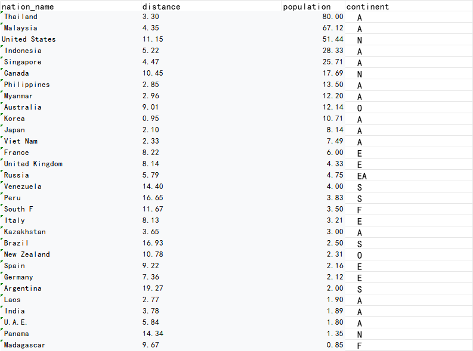
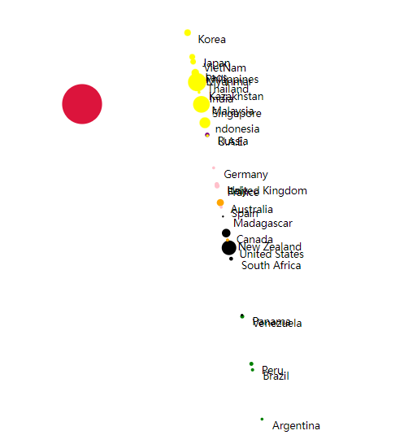

There are a large number of Chinese live overseas, including me.
so you can see Chinese people and hear Mandarin all over the world.
So I'm curious which country they are in and how far away they are from China's capital.
Here are some of my initial ideas.
1.

So I collect data first, from China's offical governement website.
Say hi to XI XD
2.

Then, I got this.
3.

Use pycharm and google map api to process the data, you will get this
4.
Put it into the D3. In case it doesn't open successfully, here is a sample.
